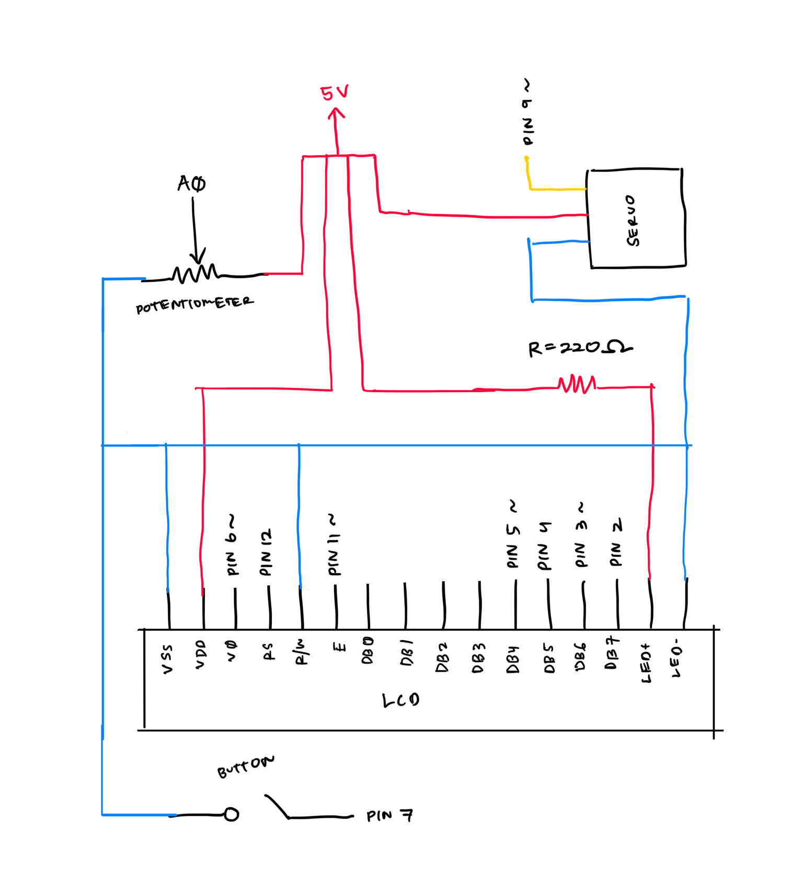
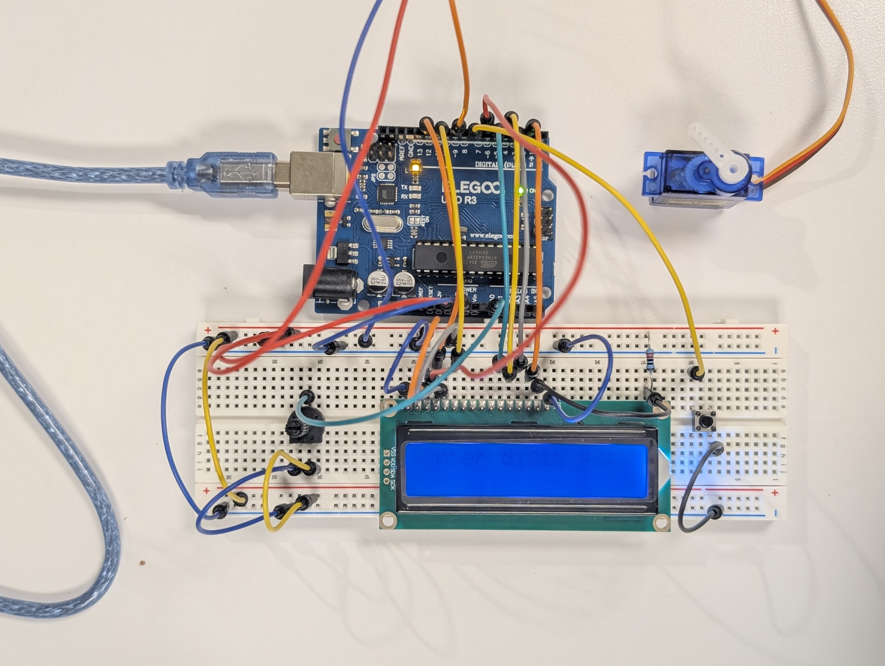
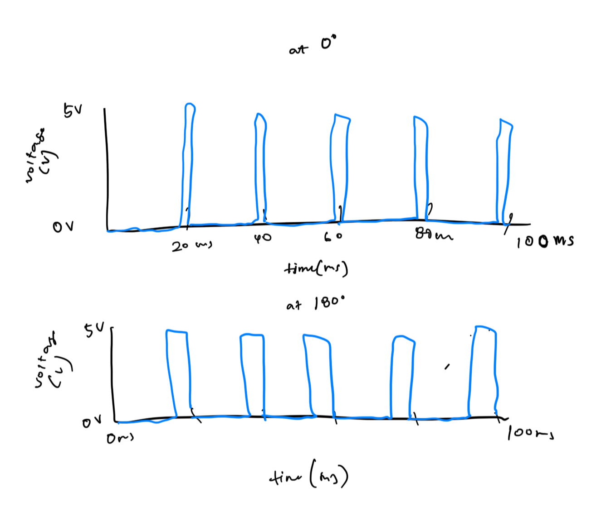

Here is all the documentation for assignment 4!
You will create a schematic, circuit, and code that uses parts from your kit that require a library (e.g. the remote control, capacitive touch, or the servo motor), and includes both an input part (sensor, e.g. capacitive touch) and an output part (actuator, e.g. servo). Your schematic description should label all connections. You have to justify why you are using the values you chose in your code and what those values are corresponding to in your circuit! In your firmware, *if* you're using analogRead(), you must write some code that calibrates your sensor readings. Document your project on your webpage.


// access LCD library
#include <LiquidCrystal.h>
// access servo library
#include <Servo.h>
// create Servo object to control a servo
Servo myservo;
// connects digital pin 7 to button
int buttonPin = 7;
// create button state variable
int buttonState;
// connects analog pin to potentiometer
int potpin = A0;
// variable to read value from potpin
int val;
// initialize minimum value for calibrating
int potMin = 1023;
// initialize max value for calibrating
int potMax = 0;
// match any needed LCD interface pin with the arduino pin number it is connected to
// connected contrast to pin~6 because Servo library disables analogwrite on 9 and 10
const int rs = 12, en = 11, v0 = 6, d4 = 5, d5 = 4, d6 = 3, d7 = 2;
// initialize the library
LiquidCrystal lcd(rs, en, d4, d5, d6, d7);
// create secret combo array
int combo[] = {1, 0, 1, 9};
// create array for guesses input
int guesses[4];
// create variable to store guesses
int guesscounter = 0;
// function if the guess is right, compares the two arrays, returns true if matches
bool arraysMatch(int combo[], int guesses[]) {
// loops through length of array
for (int i = 0; i < 4; i++) {
// if anywhere doesn't match...
if (combo[i] != guesses[i]) {
// return false
return false;
}
}
// if none of them returned false, then true!
return true;
}
// setup code here runs once:
void setup() {
// since we're calibrating, need to use serial - ADDED
Serial.begin(9600);
// print message
Serial.println("Calibrating...");
// start while loop since arduino started until 6 seconds
while (millis() - 6000) {
// read potentiometer into value
val = analogRead(potpin);
// if value is less than the current minimum
if (val < potMin) {
// reset min to val
potMin = val;
};
// if value is more than the current maximum
if (val > potMax) {
// reset max to val
potMax = val;
};
}
Serial.print("Calibrated. Min: ");
Serial.print(potMin);
Serial.print(" Max: ");
Serial.println(potMax);
// send PWM signal to set contrast
analogWrite(v0, 150);
// set up the LCD's number of columns and rows:
lcd.begin(16, 2);
// set button as input: button unpressed = open (HIGH 5V), button pressed = closed (LOW)
pinMode(buttonPin, INPUT_PULLUP);
// attaches servo on pin 9 to Servo object
myservo.attach(9);
// starting message
lcd.print("TOP SECRET");
// show msg
delay(1000);
// clear
lcd.clear();
// blink clear
delay(500);
// blink msg
lcd.print("TOP SECRET");
// show msg
delay(1000);
// clear
lcd.clear();
// blink clear
delay(500);
// blink msg
lcd.print("TOP SECRET");
// blink msg
delay(1000);
// blink clear
lcd.clear();
// blink
delay(500);
}
// main code, runs repeatedly:
void loop() {
// use a for loop to run through guesses
for (int guesscounter = 0; guesscounter < 4; guesscounter++) {
// clear before starting
lcd.clear();
// prompt user to enter digit
lcd.print("Enter digit #");
// digit that we're on
lcd.print(guesscounter);
// print colon
lcd.print(": ");
// WAIT until button is pressed!!! while button is NOT pressed...
// moved digital read directly in while loop so it constantly reads rather than updating each time
while (digitalRead(buttonPin) == HIGH) {
// move cursor down to start typing digit
lcd.setCursor(0, 1);
// read value of potentiometer (value between 0 and 1023)
val = analogRead(potpin);
// maps potentiometer's range (0 - 1023) to digit range (0 - 9) visible on LCD
// originally changed to 1017 because 1023 / 9 = 113.66666... so rounded out so 9 is mapped to as an integer!
// but now using calibrated numbers
val = map(val, potMin, potMax, 0, 9);
// print mapped value, now should be digit between 0 and 9
lcd.print(val);
// keep display from flickering
delay(100);
}
// button was pressed! exit out of while loop and save digit in guesses
guesses[guesscounter] = val;
// clear screen
lcd.clear();
// print confirmation
lcd.print("Entered");
// let message show
delay(3000);
}
// clear message
lcd.clear();
// use function check if arrays match
if (arraysMatch(combo, guesses)) {
// print unlocked message
lcd.print("UNLOCKED");
// UNLOCKED! open servo
myservo.write(180);
// keep unlocked for 10 seconds
delay(10000);
// lock again
myservo.write(0);
// clear screen
lcd.clear();
// print locked message
lcd.print("LOCKED. Enter again.");
// display msg
delay(2000);
// clear again for next msg
lcd.clear();
// if it doesn't match
} else {
// print wrong
lcd.print("WRONG");
// display msg
delay(2000);
// clear again for next msg
lcd.clear();
}
}
Sorry, I just realized I forgot to calibrate my readings since I used analogRead(). I already took apart my circuit, so I just added the code for if I did the calibration. I used 1017 as a hard code for max before I calibrated.

Honestly I'm still having trouble figuring this out. The time range is from 0 - 100 milliseconds, with pulses every 20 milliseconds. Question: why does the pulse "width" "widen" when it goes to 180 degrees? It switches or pulses between 0v and 5V. Every 0.1 seconds it adds a degree and the servo turns another degree.
One way to do this is to take multiple readings, then find a value that "ignores" the outlier. You can use the median in this case bc the median ignores the outliers and is taken from the middle of the range. To find the median, create an array of the readings, sort the values, then find the middle index of the array and the corresponding value.
If it randomly deviates by 10%, and because it's only 10%, and because it's up or down, you can average the measurements in this case, since it's only a relatively small deviation, and the up and down will kinda cancel out. You can take multiple readings, calculate their average, and use that as the measurement.
Yes. I used it when figuring out what to do for my project in order to fulfill the requirements. I also asked it to give me hints on how to start. Chat: https://claude.ai/share/98957a84-b16f-4aca-83fb-5fc5e93a37c7
I don't think I learned some of the concepts here so I asked Claude to teach me. Chat: https://claude.ai/share/a36f2f0b-e6f9-481f-ba7a-6d49fc18a6dc
Also used it to help see what's missing. Chat: https://claude.ai/share/a9521c3c-a561-4eca-ae35-dc26f8b26efb